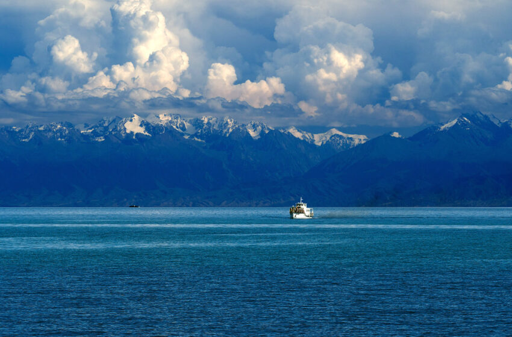
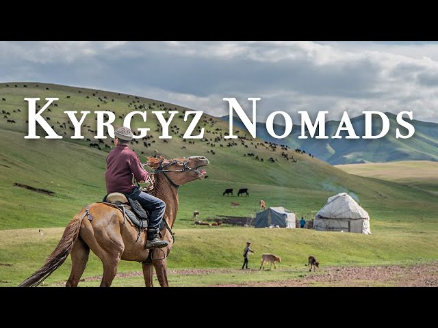
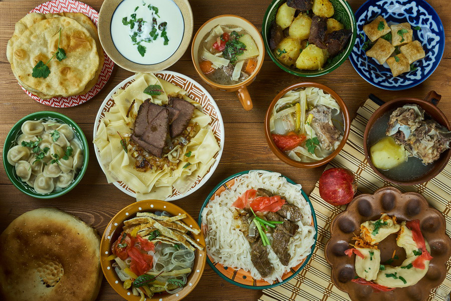
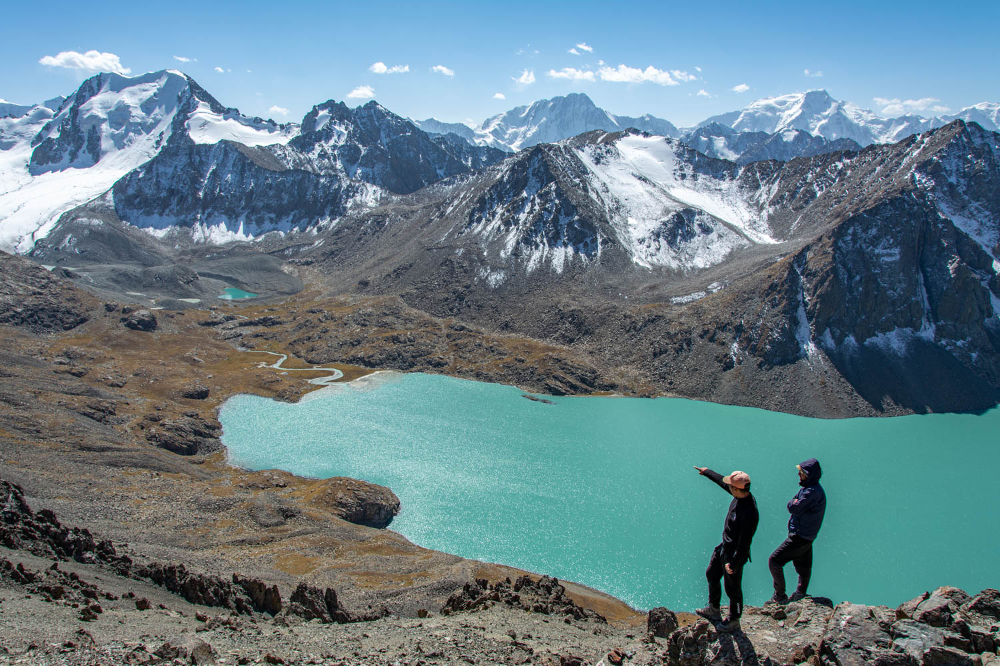
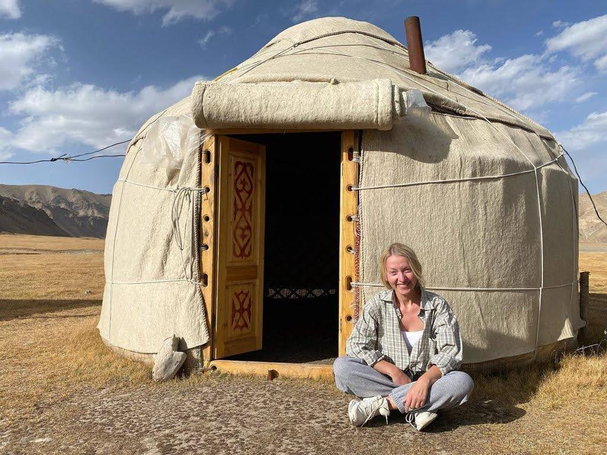
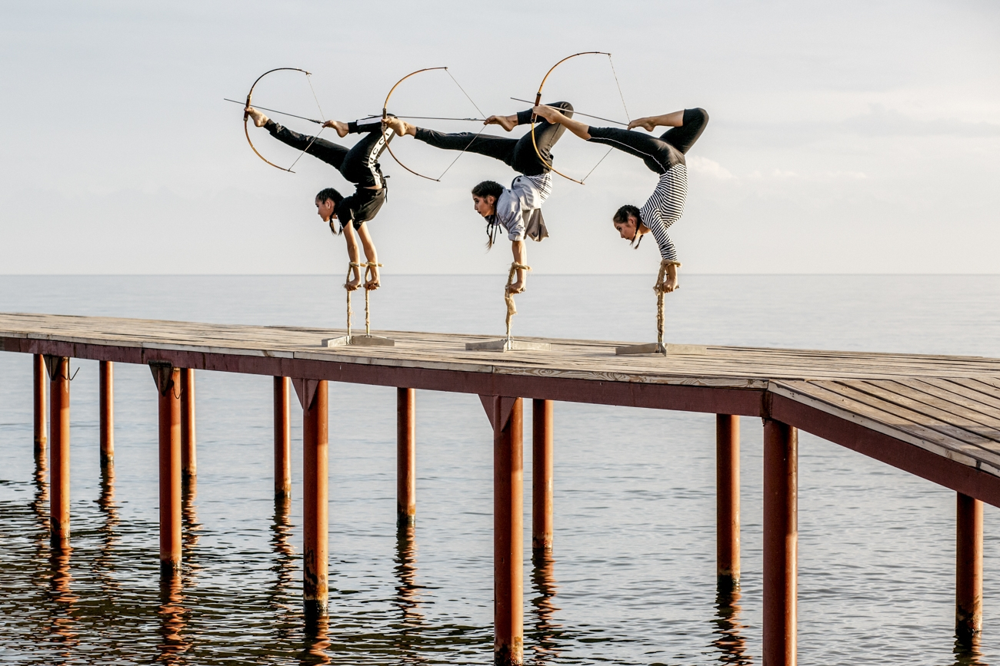
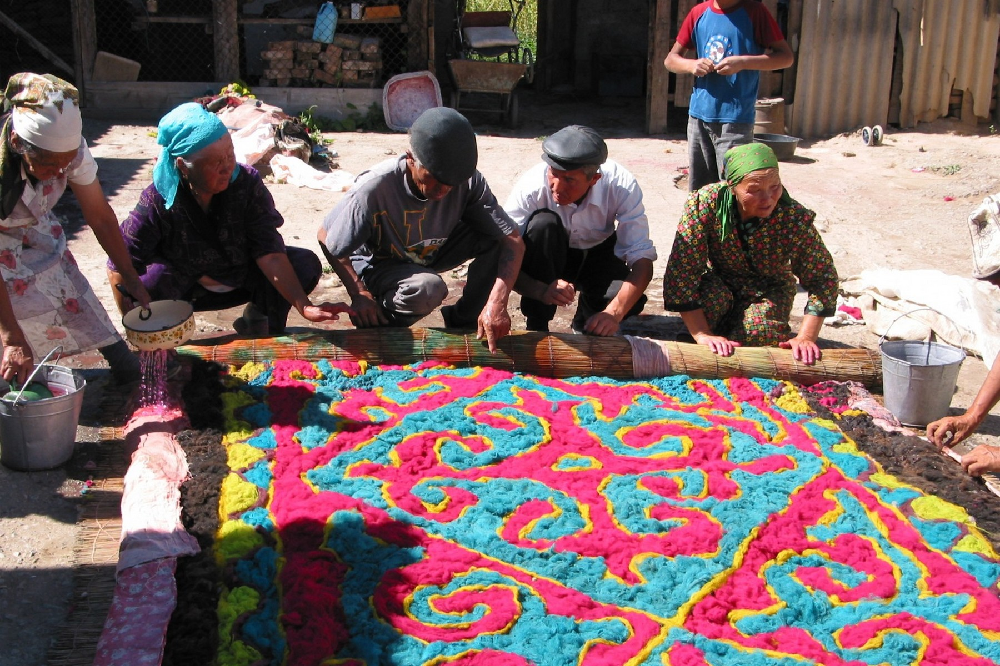
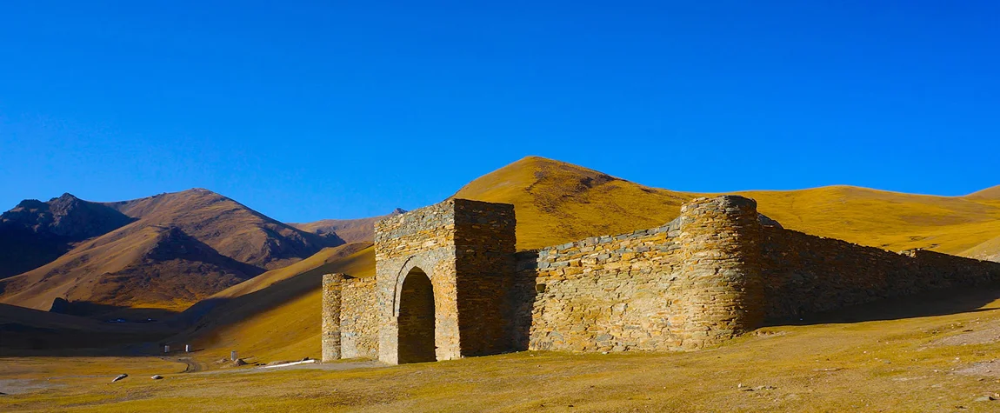
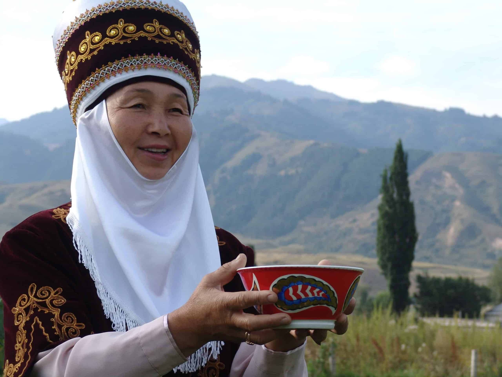

1. Majestic Mountains

The Tien Shan mountains offer breathtaking views and great trekking experiences.
2. Stunning Alpine Lakes
Visit Issyk-Kul, one of the world’s largest alpine lakes, with crystal-clear water.
3. Rich Nomadic Culture
Experience centuries-old traditions of Kyrgyz nomads, including yurt living and horseback games.
4. Delicious Cuisine
Enjoy dishes like beshbarmak, laghman, and samsa in local cafes and yurts.
5. Unforgettable Hikes
Kyrgyzstan is a paradise for hikers with thousands of trails through valleys and peaks.
6. Authentic Nomad Experiences
Stay in yurts, ride horses, and learn directly from nomadic families.
7. Vibrant Festivals
Join cultural festivals like the World Nomad Games, showcasing traditional sports and arts.
8. Living Traditions
Watch artisans make felt, carpets, and traditional crafts passed down through generations.
9. Fascinating History
Explore Silk Road cities, ancient petroglyphs, and centuries-old mausoleums.
10. Unmatched Hospitality
Kyrgyz people are known for their warmth and generosity toward visitors.